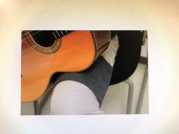
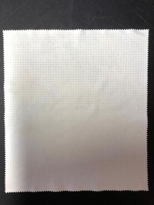
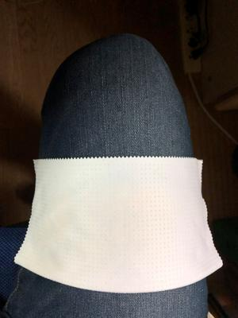
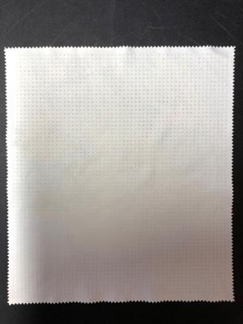
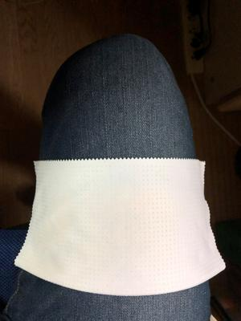

うるがいの話 ある日
最新: ギターの滑り止め【うるがいの話 ある日】とは 一日だけのプログです
『うるがいの話』の最新一日だけのプログで、通信料が少なく経済的だ。カニの画像をクリックすると全ての日付が載る『うるがいの話』サイトを表示します
|
|
【うるがいの話】 うるがい(ｳﾙｶﾞｲ urugai)とは、『もずくがに』の名前でとても大きくなります。 |
|---|---|
|
|
【カミマヤーの話】 猫のことを方言でマヤーといいます。カミマヤー（kamimayaa）とは、神の猫のことです。 |
|
【タナガーの話】 たながー（ﾀﾅｶﾞｰtanagaa）とは手長えびのことで、何種類かあり大きいのは車 エビぐらいになります。 |

|
【ぶながぁの話】 ぶながー(bunagaa)とは、赤い髪の毛、赤い身体、そして身長は１ｍ２０ｃｍ ぐらい、川の蟹を食べているの目撃された。場所は沖縄県国頭郡大宜味村のと ある村僕の隣近所に住んでいる爺さんから、聞いた話です。 |
|
|
【ギーマの話】 ギーマ(giima)とは、山原の里山に咲くスズランに似た、 花を付けます。実は食べられます、 気が付くと口の周りが紫になっています。 |
2021年12月29日 (水）ギターの滑り止め
17:43

冬になると短パンからジーパンへ着けるものが変わった。ところがである、ギ
ターが滑る、滑る！、短パンの時は素のモモに当たっていたので、滑らなかっ
たようだ。ネットで調べると、ほほ、プロでも『ギターの滑り止め』なるもの
を利用しているようだ。アマゾンで買おうかなと思ったが、評価をみると百均
で滑り止めを買ってもいいとあったので辞めた。
 



その翌日ふと, 大塚国際美術館 でお土産として買った『ハンカチ地マウスパッ
ド』が、ある。買ったのはいいが全く利用せず、ほっといてた。試してみたウ
フフ、バッチシ。
今朝、足に筋肉痛がある、ふすまの張り替えは重労働だった証だ。
１７時２５分 ビットコインの総資産 ￥１５、８７４
おぇ